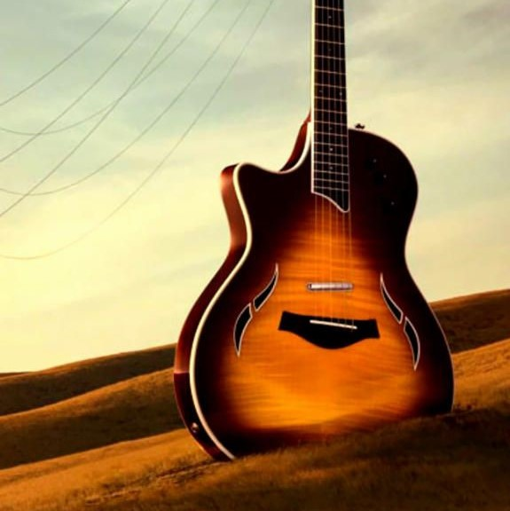
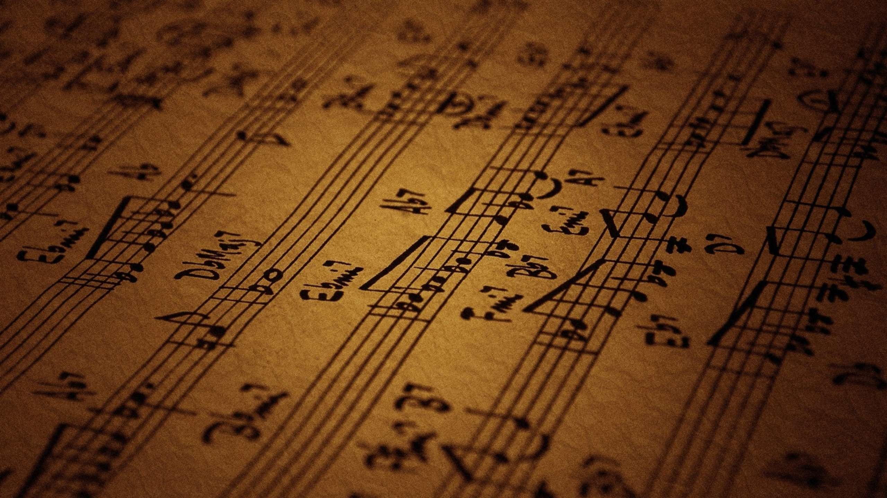

GUITAR

PIANO

VEENA
A musical instrument is a device created or adapted to make musical sounds. In principle, any object that produces sound can be considered a musical instrument—it is through purpose that the object becomes a musical instrument. A person who plays a musical instrument is known as an instrumentalist. The history of musical instruments dates to the beginnings of human culture. Early musical instruments may have been used for rituals, such as a horn to signal success on the hunt, or a drum in a religious ceremony. Cultures eventually developed composition and performance of melodies for entertainment. Musical instruments evolved in step with changing applications and technologies. The date and origin of the first device considered a musical instrument is disputed. The oldest object that some scholars refer to as a musical instrument, a simple flute, dates back as far as 67,000 years. Some consensus dates early flutes to about 37,000 years ago. However, most historians believe that determining a specific time of musical instrument invention is impossible, as many early musical instruments were made from animal skins, bone, wood and other non-durable materials. *
Musical instruments developed independently in many populated regions of the world. However, contact among civilizations caused rapid spread and adaptation of most instruments in places far from their origin. By the Middle Ages, instruments from Mesopotamia were in maritime Southeast Asia, and Europeans played instruments originating from North Africa. Development in the Americas occurred at a slower pace, but cultures of North, Central, and South America shared musical instruments. By 1400, musical instrument development slowed in many areas and was dominated by the Occident. During the Classical and Romantic periods of music, lasting from roughly 1750 to 1900, many new musical instruments were developed. While the evolution of traditional musical instruments slowed beginning in the 20th century, the proliferation of electricity led to the invention of new electric instruments, such as electric guitars, synthesizers and the theremin.

TABLA

FLUTE

VIOLIN
As you admired me alot and u saw up to now so now make an effort see my collcetion in next page